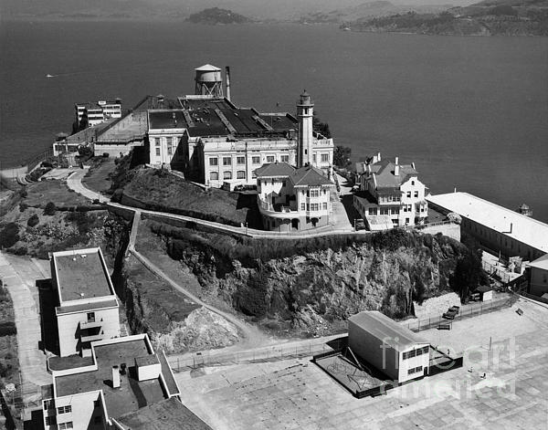

Les dates importantes
- 1775 Un explorateur espagnol donne à l'île le nom de "Isla de los Alcatraces".
- 1854 Construction du premier phare de la côte ouest des États-Unis.
- 1859 L'île devient un fort militaire.
- 1934 Elle devient une prison fédérale de haute sécurité.
- 1963 La prison ferme ses portes.
- 1969 - 1971 Des Amérindiens occupent l'île pendant presque deux ans.
- 1973 L'île est ouverte au public.

Les prisonniers les plus célèbres
Alcatraz accueillait les prisonniers les plus dangereux ou ceux qui avaient déjà essayé de s'évader d'autres prisons.
Al Capone
Le célèbre gangster de Chicago, enfermé à Alcatraz de 1934 à 1939.
George "Machine Gun" Kelly
Un braqueur et kidnappeur très connu dans les années 1930.
Robert Stroud
Surnommé "l'homme aux oiseaux", il a passé de nombreuses années à Alcatraz.
Frank Morris et les frères Anglin
Les trois prisonniers de l'évasion de 1962, jamais retrouvés.